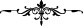

uyarak bu nimetlerin şükrünü eda et! Hz. Peygamber’in: “Yediklerinizi namaz kılarak
ve zikrederek eritin”[201] hadîsinde olduğu gibi, sen de yediklerini Allah’ı zikrederek
erit!”
Bunun en azı iki rek’at namaz veya yüz kere Allah’ı tesbîh etmek, yahut her yemekten
sonra bir cüz Kur’an okumaktır. Bunun sebebi ise yemekten sonra namaz veya zikir ile
yediğini eritmeden uyuyan kişinin kalbinin katılaşmasıdır. Kalbin katılaşmasından
Allah’a sığınırız. İşte yemek eritilerek kalbin katılaşması önlenmiş, nimetlerin şükrü de
edâ edilmiş olmaktadır.
Bu âyette şöyle bir işârî mânâ daha vardır: İlim malı ve ma’rifet hazînesi, ehil
olmayan avâma verilmez ve onların yanında anılmaz. Nitekim şöyle bir olay anlatılır:
Büyüklerden biri, bir velînin kerâmetlerini anmış, dinleyenlerden biri bunu bir başka
mecliste nakletmiş, oradakilerden biri de buna karşı çıkmış. Meseleyi asıl anlatan zâtın
yanına dönünce, o da: “Tavuk pazarında deve satılmaz.” demiş.
Yazıktır beyinsizlere ilimden bahsetmek
Kayıptır tohumu çorak araziye ekmek.
[201]. Münâvî, I, 458